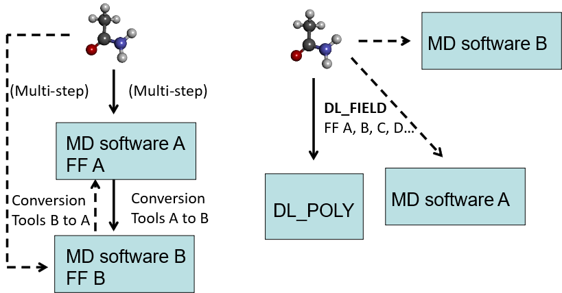

What is DL_FIELD¶
DL_FIELD program
The DL_FIELD project was initiated by Chin Yong to address the needs of CCP5 users to facilitate the construction of force field models for use in DL_POLY. DL_FIELD was first released in October 2010 (version 1.0). The latest version 4.11 is released in August 2024. For the first time, this version can also setup FF files for Gromacs simulation software.
DL_FIELD is a computer program package written in C that primarily serves as a support application software tools for DL_POLY molecular dynamics (MD) simulation package. It is a useful application tool to enchance the usability of DL_POLY and to facilitate the use of a wide range of advanced features included in the DL_POLY program.

Functions
- Force field model convertor - converts users’ system configurations into CONFIG and FIELD files that are recognisable to run in DL_POLY_2.19, DL_POLY_3 and DL_POLY_4 programs.
- Converts users’ system configurations into ready-to-run Gromacs itp, top, gro files.
- Force field model editor: allows users to edit, modify or customise force field (FF) models.
- Force field model repertoire: easily expand the existing library to include user-defined models and parameters.
- Full automatic atom typing and identification of chemical nature of atoms in molecular systems.
DL_FIELD is a user friendly tool to automate the molecular information processing and transform the system into FF models for DL_POLY runs. Diagram below shows conceptual sketches how to setup FF models.
{kind=link}
The usual approach follows the diagram on the left. Begin with a user configuration, a program script is used to convert the configuration model into FF model A for MD software A. Other program scripts would be needed to convert into FF model B, either to run in the same software or another MD software. Quite often, different program scripts were developed by third parties and conversion may involve multiple processes.
DL_FIELD uses a more direct approach as shown in the diagram on the right. It uses a consistent framework for a wide range of FF schemes so that FF conversion can be carried out via single-step processes to produce different FF models. At the moment, DL_FIELD is only able to setup FF models for DL_POLY. Future releases will be able to produce models for other computational packages in a similar fashion (shown in dashed lines).
Capabilities
- Read user configurations in PDB, xyz and mol2 formats.
- Assign freeze, tether, rigid and bond constrains to atoms.
- Pseudo point assignment.
- Core-shell polarisable model assignment.
- User-defined force field (udff) - user modification and construction of model templates.
- Equivalence atom assignment.
- Solvation with a range of solvents with insertion of counter ions.
- Bond, angles and dihedrals selections and exclusions.
- Solution Maker - molecular duplicate feature to set up liquid and solution models.
- Running DL_POLY and Gromacs within DL_FIELD.
- Universal atom typing (DL_F Notation) - a single conversion kernel embeded within DL_FIELD that is applicable to a wide range of FF schemes, with automatic atom typing capability.
- Multiple-potential capability - enable mixing of various FF schemes, including those of organic and inorganic components (bio-inorganic models).
- Third-party force field file format (CHARMM’s rtf, psf) conversions to udff.
Features appear in bold are unique to DL_FIELD.
Conversions structures
Example system model conversions (depends on types of FF schemes).
- Organic molecules - from simple to complex covalent molecules: proteins, drug molecules, glycans.
- Complex 3D networked structures: graphenes, molecule cages, polymers.
- Inorganic materials - ionic oxides, clay minerals, glass, etc.
- All of the above mixed component materials such as bio-inorganic materials.
{kind=link}